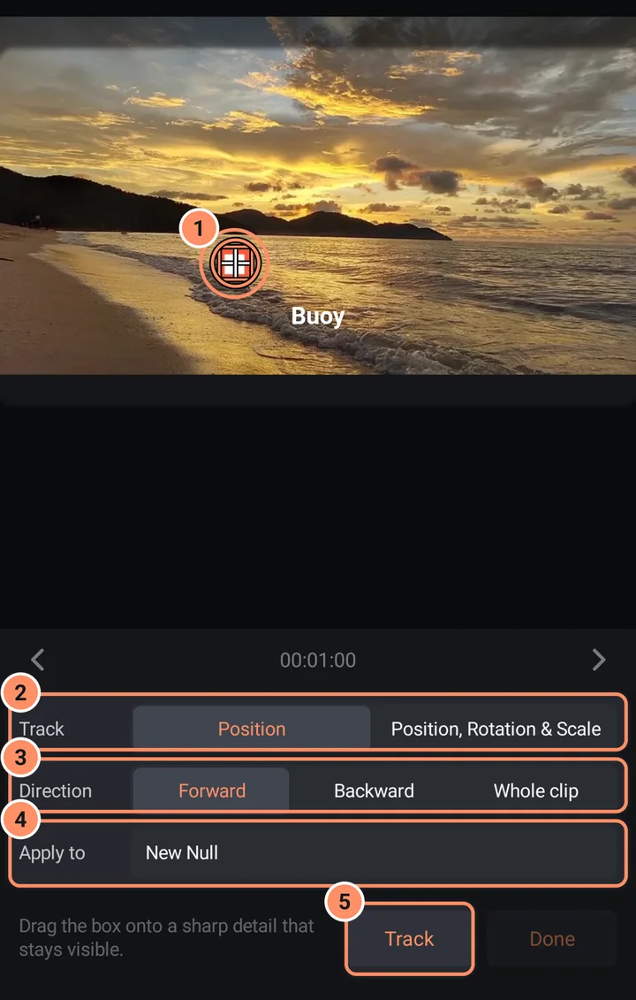

Bewegingstracking
Laat een titel, sticker of vorm iets volgen dat in een video beweegt.
Op deze pagina
Bewegingstracking volgt een detail in een video, zoals de hoek van een bord of een gezicht, en maakt positiekeyframes die je aan een andere laag kunt geven. Het werkt gewoon op je telefoon.
Zo track je
- Selecteer een videolaag. Zet de afspeelkop op een frame waarin het detail goed te zien is.
- Open het laagmenu (drie puntjes) en tik op Beweging tracken. Staat de afspeelkop buiten de clip, dan springt hij naar het eerste frame.
- Er verschijnt een kader op de video. Sleep het naar een scherp detail dat in beeld blijft, zoals een hoek of een textuur. Voor rotatie en schaal gebruik je twee kaders: zet ze op twee details van hetzelfde object, ver uit elkaar.
- Kies wat je wilt tracken en waarop je het toepast (zie hieronder).
- Tik op Volgen. Een voortgangsbalk toont "Volgen… 40%". Tik op Annuleren om te stoppen; frames die al gevolgd zijn, houden hun keyframes.
- Als het klaar is, meldt de app "N frames gevolgd. De keyframes staan op ...". Tik op Klaar.

De opties
| Optie | Keuzes |
|---|---|
| Volgen | Positie (één kader) of Positie, rotatie en schaal (twee kaders) |
| Richting | Vooruit (standaard) trackt van de afspeelkop tot het einde van de clip, Achteruit van de afspeelkop tot het begin, Hele clip doet allebei |
| Toepassen op | Nieuw null-object (een nieuwe onzichtbare laag met de naam Tracker 1, even lang als de clip) of een bestaande laag |
Het doel krijgt positiekeyframes, en met twee kaders ook keyframes voor rotatie en schaal.
Het resultaat gebruiken
Het handigst is Nieuw null-object: maak je titel, sticker of vorm daarna een onderliggende laag van het null-object met de knop voor de bovenliggende laag in de bovenbalk (zie Het editorscherm). Vanaf dan volgt hij de video. Je kunt in Toepassen op ook meteen de titellaag zelf kiezen.
Als het tracken stopt
Raakt het detail kwijt, dan stopt het tracken met een melding: "Het volgen is kwijtgeraakt bij frame N. Zet het punt terug op hetzelfde kenmerk en tik op Doorgaan." Zet het kader terug op hetzelfde detail en tik op Doorgaan: het tracken gaat vanaf daar verder. Heeft de plek te weinig detail, zet het kader dan op een scherpere hoek of textuur.
Tips
- Kies iets met veel contrast dat in beeld blijft en niet van vorm verandert.
- Zet de afspeelkop op het duidelijkste frame voordat je het kader plaatst, en kies dan Hele clip om vanaf daar beide kanten op te tracken.
- Je kunt de keyframes daarna bewerken zoals alle andere: zie Keyframes en easing.